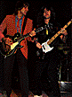
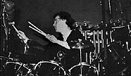

THE ONE THING that's always been most appealing about Rush is that they don't take themselves too seriously. They reaffirmed that fact early on at their sold-out New York Madison Square Garden show when they came on stage stone-faced and jumped into "We Are the Priests" while the youthful audience lapped it up.
Your Circus correspondent went in with an open mind, not having seen this Toronto trio for a few years. The Moving Pictures tour which had begun way back on February 20 in Michigan, was being highly touted in ads as one of the audio-visual wonders of the spring/summer concert season, and we were eager to see whether Rush could keep up their harrowing, self-imposed pace. (The tour was scheduled to saturate North America in five months of near daily performances.)
 While the stage was being set up, John Swenson, a respected critic with whom we usually agree, kept pointing out what a "great band" they've become. Swenson, who looks like he could be Dr. John's illegitimate son, couldn't contain his enthusiasm. Knowing his credibility was at stake since all the rock world would read his views quoted in this column, he rolled on like the Monongahela. Saying he came to the show "out of pleasure" and not on assignment, he added, "I thought they were a joke when I first saw them, but I've really been impressed by them the last couple of years, especially since hearing Permanent Waves [Mercury]. Wait till you see the show; the effect they have is Who-like."
What's going on here? Are Rush finally winning over the critics who've mercilessly been directing written abuse at them for years? Will there soon be only one writer left unimpressed with Rush?
Rush's two-hour Garden concert, for all its flashy $40,000 light show and glittery instrumental effects, proved to be one gigantic yawn. Although Swenson defends the performance and claims that "the band used to dominated by Alex Lifeson's guitar playing, but now the spotlight is deservedly more on Geddy Lee," the shift in focus really doesn't help.
Musically, Rush are in no man's land.
Granted, the three individual members, drummer Neil Peart, Lifeson and bassist/vocalist Lee are better musicians than those a few other heavy metal bands (Triumph, Motorhead) can boast. But after seven years and 11 Mercury albums, they still can't be taken seriously as instrumentalists when compared to recent powerhouses like the Mahavishnu Orchestra or Return to Forever.
Yet Alex Lifeson maintained the day after the show that "Our music doesn't have those classic heavy metal chord changes. We never considered ourselves a heavy metal band. We feel we have more to offer than that."
 If Rush are not a heavy metal band, then they're a heavy metal band with pretensions. They're not a true rock & roll band, as their music is all stiffly calculated and pre-planned. Each identical performance on this five-month extravaganza (during which Rush have played to 905,000 people on 79 dates and grossed over $4 million) holds all the excitement of a Howard Johnson's omelet. And if they're trying to go the other way, as Lifeson claims, Rush have never been able to grasp the sort of inherent musical elegance that progressive bands like Yes and Genesis display.
Though you wouldn't know it from the crowd's reaction, the band's Iyrics are even weaker than the music. They've gone from utter cosmic fluff (on previous albums) to inane drivel on Moving Pictures. Take this from "Tom Sawyer": "The world is the world is/Love and life are deep." Or this, from "Limelight": "Living on a lighted stage/Approaches the unreal/For those who think and feel/ln touch with some reality."
The last laugh is had by drummer Neil Peart. He gets to write this caca and doesn't even have to sing it.
{kind=link}
{kind=link}